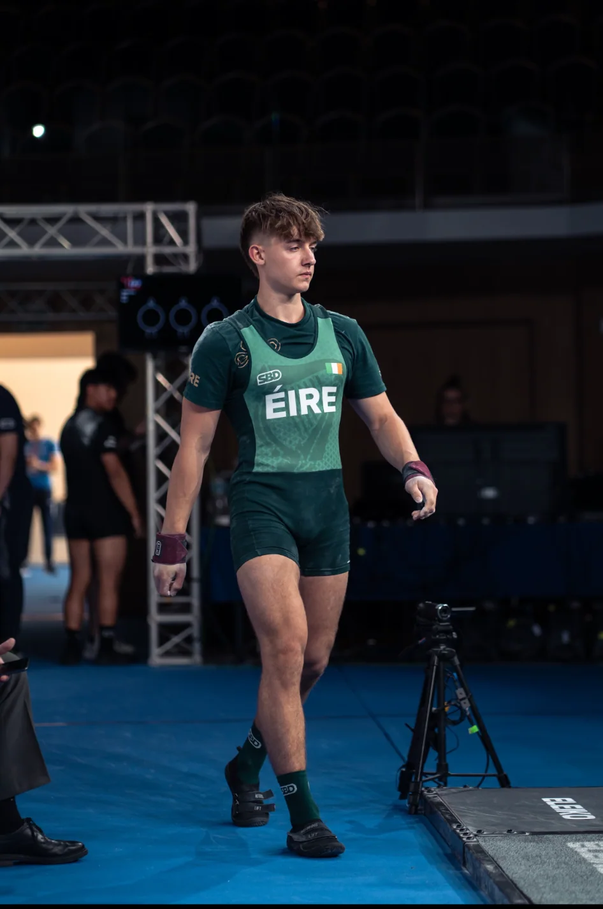

International Powerlifting.
From training in Cork at 16 to becoming Irish National Champion and representing Ireland on the European and World stage.
Irish National Team · Competition

From Cork to the world stage
I began powerlifting at 16 years old in Cork, Ireland. What started as a challenge to get stronger quickly turned into a passion for testing my limits, learning the details of the sport, and putting in consistent work. After qualifying for the Irish National Championships, I added 100 kg (220.5 lb) to my competition total in just six months. That progress was the product of countless hours in the gym and a determination to improve every time I stepped under the bar.
In April 2024, I won the Irish Sub-Junior National Championship in the under-83 kg category. That result qualified me to represent Ireland at both the European and World Powerlifting Championships. At just 17 years old, I placed 12th in the world—an experience I will always be proud of, and a reminder of what consistent effort can achieve.
Competition highlights
Competition gallery
Moments from national and international competition—from the platform and the warm-up room to celebrating with fellow athletes.
On the platform
Squat, bench press, and deadlift — three lifts that define the sport.
What the sport has taught me
Powerlifting has shaped how I approach challenges beyond sport. Tracking progress, making adjustments when a plan is not working, and performing under pressure are lessons I carry into engineering. Representing Ireland internationally also taught me to set ambitious goals, remain disciplined over long periods, and keep learning from every outcome.